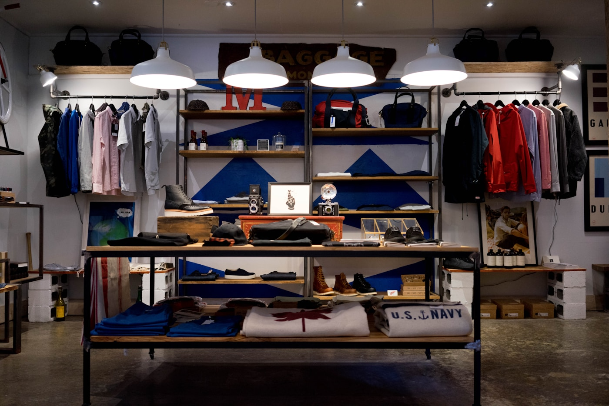

Entretenimiento
Cine y tiempo juntos
Cinemark y espacios para quedarse después de la película.
Ver más
La Gran Vía
Ambiente · Estilo · Diversión
Explorar Cómo llegarEntretenimiento
Cinemark y espacios para quedarse después de la película.
Ver más
Restaurantes y cafés
Mesas en la vía peatonal, de día y de noche.
Ver más
Moda
Zara, Stradivarius y tiendas del nivel 1 y 2.
Ver más
Salud y belleza
Servicios y productos en un mismo lugar.
Ver más
Consulta las ofertas vigentes de los establecimientos. El sitio original deja este bloque casi vacío en la home; aquí hay un llamado claro.
Ver promocionesActividades en Antiguo Cuscatlán. Un título sin contenido no invita a volver: por eso esta sección explica qué esperar.
AgendaLa Gran Vía se inaugura en 2005 como el primer lifestyle center de El Salvador y de la región. Integra ambiente, estilo y diversión en El Espino, Antiguo Cuscatlán.
Carretera Panamericana y Calle Chiltiupán. Antiguo Cuscatlán, La Libertad. El Salvador, Centroamérica.
Lunes a jueves: 10:00 a.m. a 8:00 p.m.
Viernes y sábado: 10:00 a.m. a 9:00 p.m.
Domingo: 10:00 a.m. a 7:00 p.m.
Restaurantes y kioscos en vía peatonal pueden variar.